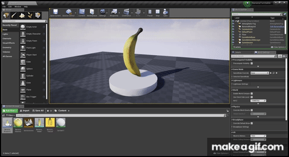

Unreal Engine assignment
For this assignment, I worked with the Unreal Engine from Epic Games Studios. Unreal Engine is a tool for designing and building games and other types of visualizations. The engine seems pretty intimidating at first, but with the right help you can make some pretty cool things happen quickly, even as a beginner.
We were assigned to follow two parts of a tutorial from raywenderlich.com. In the first part, we learned how to use meshes, models, and materials. With these things, you can make items in your game and make them look nice. We also got a small introduction to blueprints and nodes. Blueprints are basically used whenever you want something to happen in your game. In the first half of the tutorial we made a banana, in the second half we made it spin on a platform.
In the second tutorial, I learned more about blueprints. I created a player in the form of a red box and made it move around. Then, I added bananas into the level and made them disappear whenever the player ran into them. This was achieved with the help of collision and most importantly, blueprints.

Spatial Augmented Reality assignment
Spatial Augmented Reality is the practise of projecting visuals onto any surface, be it buildings, sculptures, or even people. For this assignment we used MadMapper software.
We grabbed some styrofoam figures, two round ones and a mushroom. I made some visuals to be projected onto the mushroom shape.
We also made a Dr Phil M&M that responds to sound.